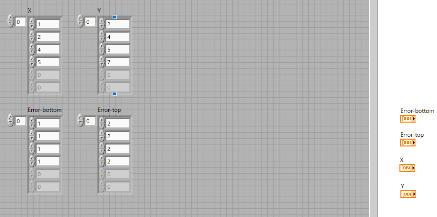
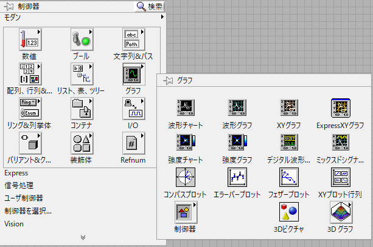
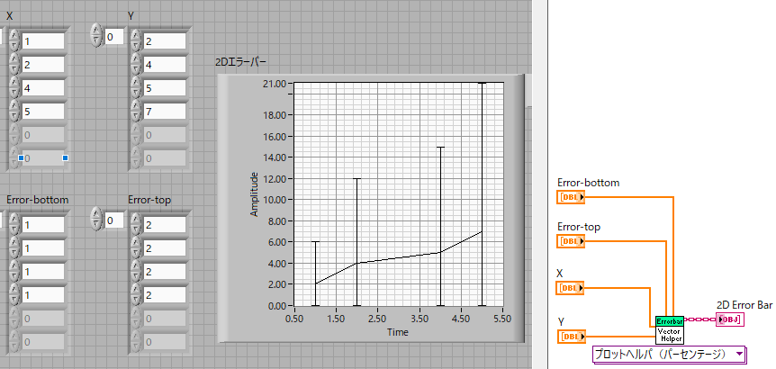
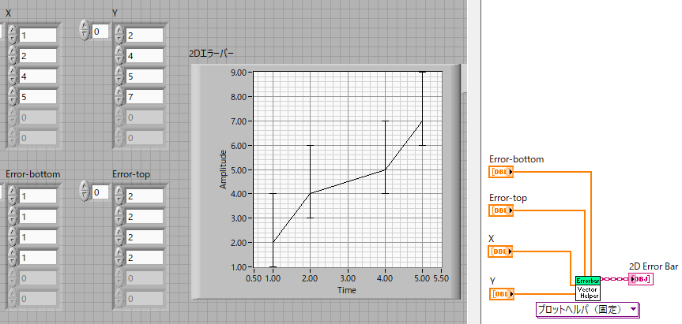
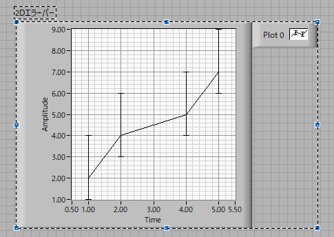
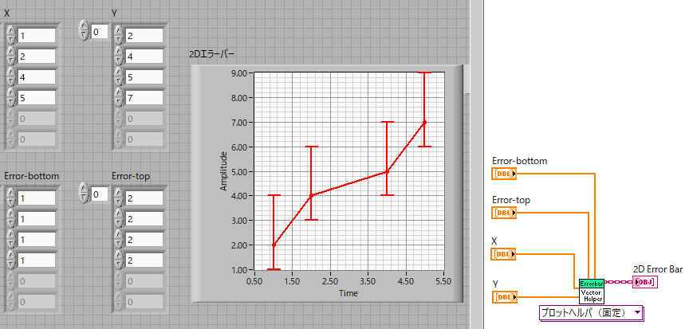
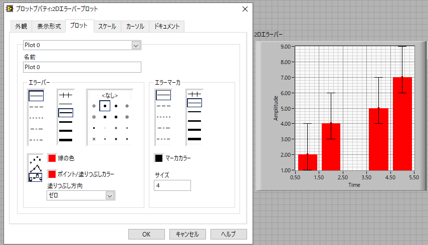

エラーバープロット-02
データの信頼性，ばらつきを示すためには，エラーバー，が必要となります．
しかし，エクセルなどでエラーバーを作成するのは一苦労．
LabViewではさりげなく実装されています．
まずは，X,Yデータと上下のエラーの値の配列を作りましょう．

一般的なエラーバーは上下同じ値ですが，今回は別の値を用いましょう．
もちろん，X,Y，エラーの上下の配列の数は同じにします．
エラーバープロットアイコンを設置しましょう．

ブロックダイヤグラムを見ると，X，Y，さらに，エラーaパーセンテージ，エラーbパーセンテージの端子があります．
ここで，
エラーaパーセンテージ ： 上側のエラー値
エラーbパーセンテージ ： 下側のエラー値
となります．
配線して実行すると，

となります．ちゃんとエラーバーが表示されましたね．
しかし，よく見るとエラーバーの大きさが変ですね，これは初期状態ではエラー値をパーセンテージで計算しているからです．
エラー＝１ → Yの値の100％の大きさ
となってしまいます．
ですので，ブロックダイヤグラムから，固定，に変更すると，

エラーの値に応じたエラーバーが作成できます．
初期状態のグラフは素っ気ないので，いろいろとデザインしたいですね．ここで注意です．
なぜかプロパティが二つある
のです．
凡例の下をクリックすると，

凡例を含んだグラフ全体が指定されます，この状態ではグラフの位置は変更できてもグラフのデザインは変更できません．
ですので，
グラフ上（白いマス目の場所）を右クリック
してデザインを変更してください（なんでこんな面倒なことをしたのだろう？？？，２０１３でも同じでした）

ちょっとは見やすくなったでしょうか．．．
棒グラフにしたいときには，プロパティで，左下の（ポイント/塗りつぶしカラーの左）を変更することで可能です．

次ページに，エラーバープロットをオーバープロットする方法を示します．